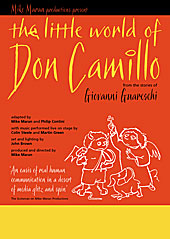

|
|
Past shows:The Little World of Don CamilloMike in ItalyIn the late 1950s my father brought Don Camillo stories home from the library. Not yet ten years old and an avid reader I devoured them all. Nearly half a century later I find myself writing a musical storytelling stage adaptation of these stories. They are set in Emilia-Romagna just after the war in the small towns on the south bank of the River Po between Boretto and Polesine and I decided to go there and have a look at The Little World of Don Camillo for myself. Ryanair call the airport at Forli, Bologna Airport Thats a good one! Its 90 kilometers away - an hour and a half on the bus, then a train to Parma and another bus to Boretto where I met Emanuela and Enrico who are tour operators for FiumePo. I was going to hire a bike from them but they persuaded me to take a houseboat too. They filled the boat with fuel and food, showed me how to drive it, said a few words in Italian about navigation, gave me a chart, told me not to worry about anything and waved a cheery goodbye as I set off upriver on my own in a 40 horse power vessel that sleeps six. The River Po's a mighty big river for such a mighty wee name! I spent my first night in the boat at Torricella - a small town well known to Don Camillo readers. Still a bit shaky I couldnt sleep but lay in my bunk reliving the delight and tension of my first day navigating the river. Two hours into the voyage I stopped to make coffee. I switched off the engine and threw the anchor overboard. Through the galley window I could see the riverbank whizzing by. I ran out on deck and checked the rope. There was no anchor on it anymore - just a frayed end. I was swirling down the Po! I tried to start the engine and it wouldnt go. The River Po moves swiftly with a mind of its own and at this moment I had no mind at all. During this panic I must have done something right because the engine started again. I dont know how! Half an hour later I was back at the spot where I was going to have a coffee. I didnt feel like it any more. The next stop was when the engine ran out of fuel. Emanuela and Enrico had told me what to do 䴋 but it all seemed different with the boat drifting down stream. I refilled the fuel tank without spilling too much then squeezed on the pump until it got harder. But when I squeezed and I squeezed it never got any harder. (Dont laugh!) Anyway, the engine fired into life all by itself again. And here I was safely tied up at Torricella. I had found the spare anchor and I was calming down but the night wasnt. There was a huge symphony of water going on lapping the hull, gurgling and grinding the jetty. The sounds didnt bother me - the idea that my house had slipped its moorings and was spiralling downstream to Venice did bother me. Then the drumming started. At first a few syncopated shots on a snare drum, then a full percussion section. It was raining. A flash of lightning followed by an outlandish rumble of thunder that rolled down the river. I woke up next morning covered in bites. Tiny birds with curved wings skimmed the surface feeding on insects and I cheered them on. I got on the ships bike and cycled into Torricella for some insect repellant. And do you know what? I had remembered to bring my cycle clips with me! There are no shops in Torricella. And there are no shops in the next village. By the time I found a shop in the third village, Sissa, the mother ship was far away and I was adrift on a little bike designed for a small girl - a pink one! I decided I was really in a space capsule and named the mother ship Apollo. I parked the bike outside the shop. There were four old ladies inside who stopped their conversation and gazed at me with gentle fixed smiles as I stood in the doorway cycle clips and all. I looked back at these happy faces and I wanted to say in a big deep voice,Take me to your leader, but the word duce did not feel like quite the right word round here. One of old ladies asked me what nationality I was. I was flattered that she had assumed I was an earthling and they were astonished that I had cycled all the way from Scotland! I regained the mother ship, slipped my moorings and set of for Polesine where I planned to spend the second night. All my anxiety of the previous day slipped away as I voyaged upstream with new-found confidence - steering with my feet and spitting cherry stones into the river. I dont think I saw another boat all day! Its a mighty river but almost deserted. Sometimes the riverbank is thickly forested, sometimes it is a sandy beach, and everywhere it is quiet. Polesine was even quieter than Torricella. No thunder and lightening, no rain, and thanks to an impenetrable barrier of insect repellent, no mosquitoes. The boat was a cradle and the river rocked me to sleep. After breakfast I set off on the little pink bike for Roncole Verdi - birthplace of Giuseppe Verdi and also the home of Alberto Guareschi, son of the author of the Don Camillo stories. Oh what a beautiful morning! Its only June but already the corn is as high as an elephants knee! I cycled through a landscape that hasnt changed since the days of Don Camillo and Peppone and I watched farmers till the rich soil of this fertile valley with agricultural machinery that looked at least a 100 years old in an atmosphere that reeked of warm manure. I had a guided tour of the house where Verdi was born. Then went to Bar Guareschi to meet the authors son. The bar is a shrine to Giovanni Guareschi and houses an exhibition of the authors writings and drawings. Alberto is delighted that we are doing a stage adaptation of his fathers work at this years Edinburgh Festival and guides me around the exhibition until the baby in his arms fills its nappy. Alberto excuses himself and I cycle back to the boat. Near the riverbank the buildings have first floor escapes onto the dyke and those houses bear a watermark displaying the height of the last flood in October 2000. Today it is my pleasure to mess around in a boat on the river. On another day these waters burst their banks and sweep away everything for several hundred yards on either side. The peasants of Emilia-Romagna defend their land from the mighty river just as they defended it 60 years ago against an occupying army. By 1945 the partisans numbered over 100,000 and these brave contadini fought and defeated the German army. They were predominantly communists and the peace they won was fragile as the Christian Democrats, The Vatican, and the USA lined up against them. These were the days of the Don Camillo stories immediately after the war as Catholic priest and Communist mayor locked horns and battled for the soul of Italy. The people of Emilia-Romagna, Italys red-belt, are clear winners. The legacy of the partisans can be seen everywhere among the communities in this valley where the commitment to social progress and public services is envied all over the world. Lest anyone forget the price that was paid there is a memorial to the peasants who lost their lives in Piazza Nettuno in Bologna 䴋 a wall covered with thousands of small photographs of contadini in their Sunday best - men who gave their lives in the war against fascism. I spent the first night in a luxurious three star hotel in Brescello (the town where the Don Camillo films were shot) - Hotel Brixellum tel. 0522 686120. The hotels restaurant was especially good. And the last night in a cheap and cheerful one star hotel in Bologna - Albergo Garisenda tel. 051 224369 which couldnt be more central. Philip Contini, capo of Valvona & Crolla, (whos doing The Little World of Don Camillo with me at this years Fringe) recommended dinner at Il Cantuccio, Via Volturno 4 tel 051 233424. Unfortunately, the night I was in Bologna Il Cantuccio was closed and I went to the restaurant immediately opposite on the other side of the street. Dont. The waitress there is ill-tempered and the thin house wine lookes like red ink and tastes unpleasant. In between I spent three glorious days and nights on the Po. Take your mobile phone with you in case of emergencies. When I lost the anchor on the first day I just called them up - 0522 835243 - and Enrico ploughed his way up the Po in a speedboat with a smile and a replacement. Check out their website www.fiumepo.com Ciao. copyright The Scotsman |
|  |
| More about this show: |
| Reviews |
| Photos |
| Mike in Italy |